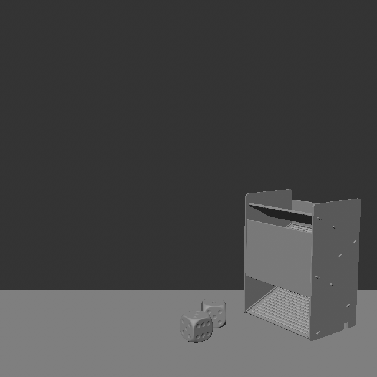
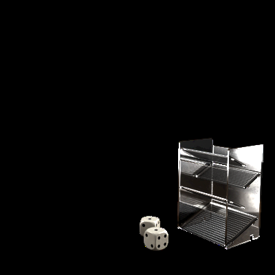
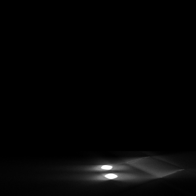
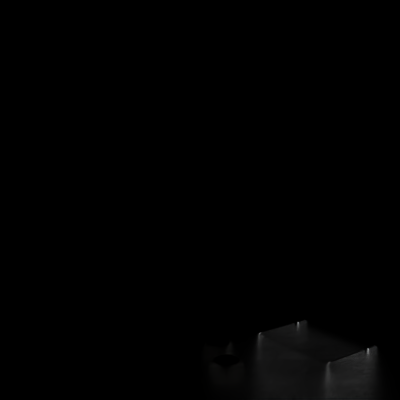
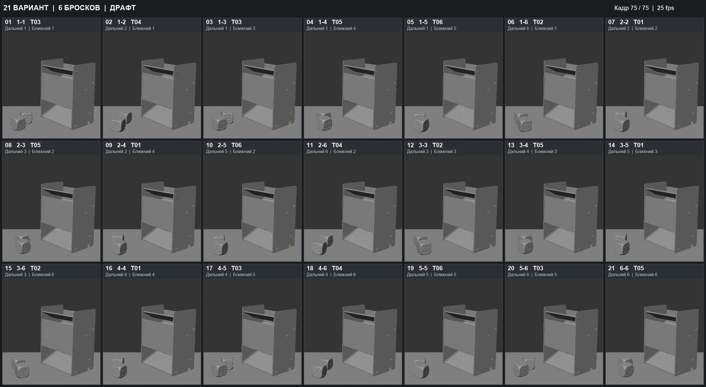

Видимая
модель
Крупная геометрия.
Цифры читаются
на мобильном экране.
Cinema 4D / MCP / октябрь 2026
Как мы собирали сцену, отбирали броски
и готовили 21 вариант анимации

01 · Как ставилась задача
«Не страшно, если кубики будут пересекать заднюю стенку»
Что изменили в расчёте
Верхняя и третья платформы важны.
Скрытые пересечения можно допустить.
После просмотра задавали конкретное ограничение для следующего расчёта.
Большая часть полезных уточнений появилась после просмотра сцены. Например, первоначальная геометрия могла выглядеть похоже на референс, но мешала кубикам проходить на следующий этаж. Потом я уточнил, что из камеры важны пересечения с первым и третьим этажами, а задняя стенка и скрытые платформы допускают пересечения. Так мы сузили задачу: исправляли пересечения, которые были видны в кадре. Источник: сообщения о геометрии платформ и допустимых пересечениях в версиях 11–12.02 · Архитектура сцены
Схема соотношения геометрии и коллайдера.
Размеры условные.
Крупная геометрия.
Цифры читаются
на мобильном экране.
Меньше внутри машины.
Отдельные ограничения
для контактов.
Поворот геометрии
задаёт нужную верхнюю
грань.
Кэш трансформов.
Одинаковое воспроизведение
во всех слоях.
Python использовали для сборки и проверок; в сцене оставляли нативные контроллеры.
Запрос «без кучи Python-нод» не означал отказ от кода автоматизации. Код через MCP собирал нативные объекты и настройки Cinema 4D. Дальше сцена воспроизводилась с нативными контроллерами, Xpresso и кэшем. Видимая модель, коллайдер, ориентация чисел и кэш движения выполняли разные задачи. Крупная модель помогала читаемости, а меньший коллайдер позволял пройти внутри машины. Пересечения всё равно приходилось проверять из рабочей камеры. Источник: переписка о нативном сетапе и размере кубиков; исходники физики; variants18.py и build18.py.03 · Геометрия и правдоподобие
Изменение размера слишком заметно.
ОтказалисьПопытка скрыть пересечения не подошла визуально.
ОтказалисьЭксперимент версии 11 приняли; каждый новый бросок требовал бы правок.
Приняли в версии 11Для видимых платформ подняли коллайдеры на 2,5 см.
Продолжили с этим вариантомКамера задавала приоритет исправлений: платформы 1 и 3.
Мы попробовали несколько способов обойти несоответствие большого кубика и небольшой машины. Плавный рост выглядел искусственно. Обрезку кубиков в местах пересечения с этажами тоже отбросили. В версии 11 вручную корректировали записанную физику, сохраняя вращение, и этот эксперимент приняли. Но для множества бросков такой подход становится дорогим. В версии 12 проверили изменение коллайдеров видимых этажей. В финальном отчёте этого эксперимента указан подъём на 2,5 сантиметра. Изменение коллайдеров позволило проверить другой способ расчёта вместо ручной правки каждого броска. Источник: переписка версий 03, 09, 11 и 12; collider12_final_verification.json; manual11_subframe_verification.json.04 · Управляемый игровой результат
Один и тот же бросок.
Разные верхние грани.
При смене грани сохраняем центр
кубика и контакт с полом.

Один физический вариант T03
Нужная грань задаётся для всего проигрывания. Дополнительный доворот в конце не нужен.
Траектория и вращение физического корня записаны в кэш. Геометрия с цифрами получает постоянную допустимую ориентацию куба, чтобы в конце сверху была нужная грань. При этом нужно компенсировать положение модели, иначе можно сместить её центр или нарушить контакт с полом. Числа меняются без нового расчёта физики и без анимации доворота в финале. Когда мы заметили странное вращение, отдельно проверяли корневое движение и ориентацию геометрии, чтобы искать причину в нужном слое. Источник: нативный контроллер 07 DICE RESULT; area08_solver.py; кадры одного варианта T03 с разными результатами.05 · Масштабирование без новых симуляций
Выберите пару, чтобы увидеть её вариант.
Назначение для выбранной пары
Движение T03
Дальний 1 · ближний 3
Одна библиотека Alembic:
два трансформа и шесть временных участков.
Геометрия остаётся в сцене.
Порядок пары в данных и порядок кубиков в кадре разделили.
Большая цифра: дальний 8 / ближний 7 среди 15 непарных результатов.
06 · Приёмка анимации
Нужные числа. Границы зоны.
Стабильность принятых движений.
Кубик действительно останавливается?
Нет ли доката и вращения на месте?
«…всё ещё странно докручивается в конце»
Фрагмент: кадры 40–75 · 25 fps
Проверки отсеивали кандидатов. Естественность движения оценивали на превью.
Правильные верхние грани и попадание в зону ещё не означают, что бросок выглядит естественно. Мы оценивали остаточное вращение при малом перемещении и повторное движение после почти полной остановки. Но эти численные признаки были эвристиками, а не полноценной оценкой правдоподобия. В T06 я продолжал замечать доворот, хотя технические проверки проходили. В сравнении показан фрагмент кадров 40–75 двух сидов при 25 кадрах в секунду. У принятого варианта заметное движение заканчивается примерно к 55-му кадру. Поэтому после численных проверок мы смотрели анимацию. Источник: обратная связь по T06; repair18.py; исходные кадры сидов 531638 и 293535; t06_round3/verified.json.07 · Подбор T06
проверок в одном заходе.
Ни одна не прошла заданный фильтр.
Вернулись к раннему
тестовому кандидату.
Сид 293535. Алгоритм прежний.
Ручного сдвига анимации нет.
Приняли выход за границу примерно на четверть миллиметра. Ранний кандидат сохранился в журнале.
В одном журнале осталось 520 проверок, не прошедших заданный фильтр. Попадание двух крупных кубиков в узкую область сильно ограничивало выбор. Вернулись к кандидату из ранних тестов. Его контрольная сетка выходила за границу примерно на четверть миллиметра; этот допуск обсудили перед приёмкой. Движение при этом не сдвигали вручную и алгоритм не меняли. Этот вариант приняли. В следующий раз я бы согласовал допуски до перебора. Журнал с параметрами и результатами помог вернуться к раннему варианту. Источник: t06_round3/trials.json, 520 записей; t06_round3/verified.json, худший margin −0,0247226 см; сообщение «Фиксируем Т06».08 · Рендер и композ



Reflections выглядел пустым при просмотре через alpha.
RGB-содержимое требовало отдельной проверки.
Зафиксировали нужные три слоя, убрали лишние AOV, сохранили DWAB и прозрачность стекла.
В композе нужны были отдельные beauty, тени и отражения на полу, а стекло должно было сохранять прозрачность. Слой отражений выглядел пустым, и мы разбирались с интерпретацией alpha в After Effects. RGB и alpha проверяли отдельно. Здесь показаны тестовые изображения слоёв: для Shadows выведен alpha-канал, для Reflections яркость RGB увеличена в четыре раза только для просмотра. Это не доказательство готовности любого композа на произвольном фоне. Лишние AOV из тейка отражений убрали, сохранили DWAB и Refraction Affects Alpha для стекла. Источник: переписка версий 13–15 и скриншот Interpret Footage; тестовые PNG слоёв; финальные настройки в описании версии 18.09 · Доставка результата
21 комбинация

«Ты мне не то видео показываешь»
Номер варианта и сид в кадре помогали обсуждать конкретный бросок.
Когда я сказал, что вижу будто то же самое, агент сравнил старые и новые траектории и проверил используемый кэш. Изменения в данных действительно были. Однако общая сетка из 21 комбинации оказалась неудобной для обсуждения шести физических вариантов. Мы пересобрали превью: шесть крупных бросков, понятные T01–T06, сиды в кадре, отдельно сравнение до и после. Я после этого подтвердил, что вижу изменения. Точную техническую причину проблемы с отображением мы не установили, поэтому не называем её доказанным багом плеера или кэша. Источник: сообщения «Ты мне не то видео показываешь» и «Теперь вижу»; свежие превью и проверка траекторий сохранённой сцены.10 · Состояние, откат, воспроизводимость
Для каждого эксперимента
сохраняли отдельную версию.
После зависаний возвращались к сохранённому состоянию,
а не восстанавливали сцену по памяти.
Версия 18
Выводы из кейса
«Фиксируем Т06»
6 принятых движений
21 результат · 63 рендерных тейка